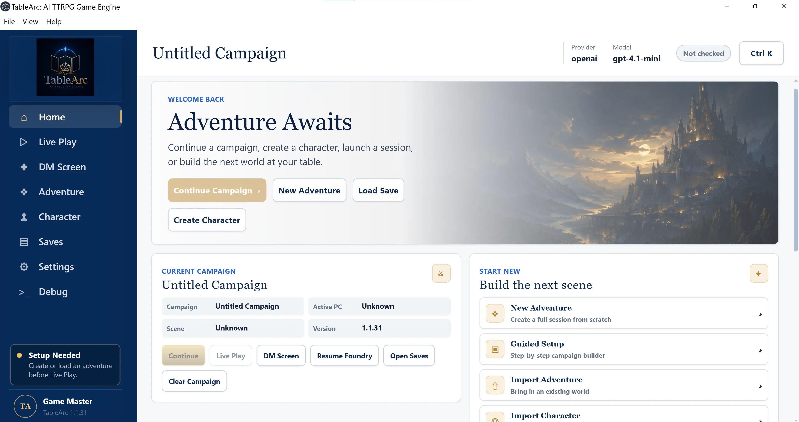

Live Play
Natural-language intent, state-derived actions, consequences, continuity, and responsive narration.
GreenKappa Labs flagship project
TableArc connects natural-language play to canonical campaign state, rules-aware procedure, characters, maps, combat, consequences, persistence, and debug proof.

 Active prototype · independently developed
Active prototype · independently developed
What it is
TableArc is a local-first desktop AI tabletop engine. Players interact naturally, but the durable truth of the game lives in explicit state: actors, scenes, clocks, clues, resources, combat, spatial relationships, consequences, and saves.
The product thesisThe AI imagines.
The engine remembers, adjudicates, maps, resolves, and proves.
The product
TableArc brings campaign setup, generation, review, live play, character workflows, saves, provider settings, and debugging into one desktop shell.
Runtime architecture
The model does not get to declare durable game truth by itself. The runtime owns what changed, why it changed, and what later systems are allowed to assume.
Natural-language intent, state-derived actions, consequences, continuity, and responsive narration.
Generation, normalization, bounded repair, validation, atomic admission, and opening-scene readiness.
Active-PC identity, sheets, resources, inventory, passives, features, party context, and repair workflows.
Spatial truth, range, exits, visibility, initiative, targeting, conditions, damage, and aftermath.
Clocks, clues, evidence, relationships, consequences, scene memory, saves, and restart continuity.
A generic OpenAI and Ollama contract serving live play, generation, repair, rules, recap, state, and debug.
Current state
TableArc is an active prototype. The site distinguishes documented validation from broader product intent instead of presenting every roadmap item as finished.
Why it matters
TableArc is built around the harder problem: preserving the freedom and responsiveness of tabletop play while keeping rules, state, space, consequences, saves, and authorship coherent enough to trust.
Built independently
TableArc demonstrates product architecture, React/Vite/Electron development, OpenAI and Ollama integration, structured state modeling, provider contracts, testing strategy, debugging, technical documentation, interface design, and sustained iterative repair across a large application.
Contact
Reach out about AI tabletop systems, local-first applications, authored-adventure tooling, structured runtime state, interactive media, or applied AI engineering.